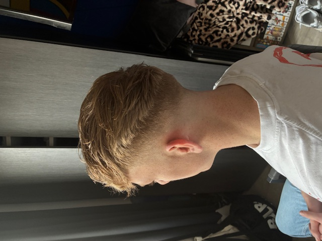

02
Dienst
Fade & Taper
Van skin fade tot hoge taper, strakke overgangen die perfect aansluiten op jouw stijl.
Afspraak makenWat ik doe
Gespecialiseerd in herenkapsels, van simpel tot technisch

Dienst
Stijlvol knippen en stylen. Van klassiek tot modern, altijd een scherp resultaat.
Afspraak maken
Dienst
Van skin fade tot hoge taper, strakke overgangen die perfect aansluiten op jouw stijl.
Afspraak maken
Dienst
Strakke baard of verzorgde stubble, Sven zorgt voor een perfect afgewerkt resultaat.
Afspraak maken
Dienst
Wassen, föhnen en stylen met professionele producten voor een look die de hele dag zit.
Afspraak makenPersoonlijk advies
Loop gerust binnen en ik adviseer je wat het beste bij jouw haar en stijl past. Geen gedoe, gewoon een goed gesprek.